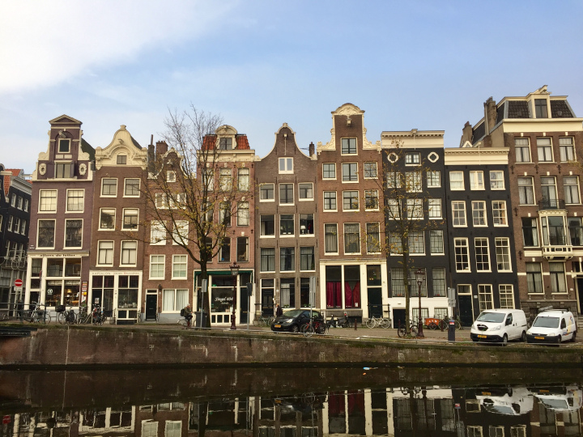

<ion-header>
  <ion-toolbar>
    <ion-title class="title">
      SJAirlines
    </ion-title>
  </ion-toolbar>
</ion-header>

<ion-content>
  <ion-card class="home-card">
    <ion-card-header>
      
      <ion-card-subtitle>Join with us</ion-card-subtitle>
      <ion-card-title class="titleCard">Welcome to SJAirlines</ion-card-title>
    </ion-card-header>

    <ion-card-content>
      Keep close to Nature's heart... and break clear away, once in awhile, and
      climb a mountain or spend a week in the woods. Wash your spirit clean.
    </ion-card-content>
  </ion-card>

  <ion-card class="home-card">
    <ion-text>
      <h1 class="title-card2">Best Destinations</h1>
    </ion-text>

    <ion-card>
      <ion-slides pager="true" effect="fade">
        <ion-slide>
          
        </ion-slide>
        <ion-slide>
          
        </ion-slide>
        <ion-slide>
          
        </ion-slide>
        <ion-slide>
          
        </ion-slide>
      </ion-slides>
    </ion-card>
  </ion-card>

  <ion-footer>
    <ion-toolbar>
      <div class="footer">
        <ion-title class="titleCard">About us</ion-title>
        <ion-icon
          class="icon1"
          ios="logo-whatsapp"
          md="logo-whatsapp"
        ></ion-icon>
        <ion-icon class="icon2" ios="logo-twitter" md="logo-twitter"></ion-icon>
        <ion-icon
          class="icon3"
          ios="logo-instagram"
          md="logo-instagram"
        ></ion-icon>
        <ion-icon
          class="icon4"
          ios="logo-facebook"
          md="logo-facebook"
        ></ion-icon>
      </div>
    </ion-toolbar>
  </ion-footer>
</ion-content>
